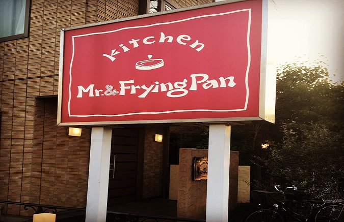
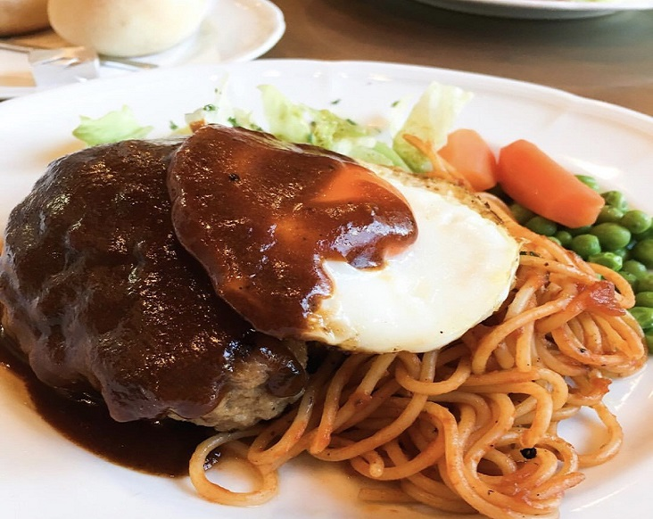
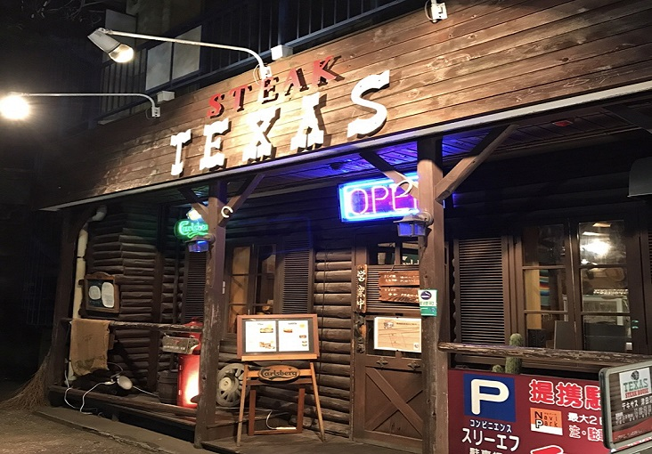
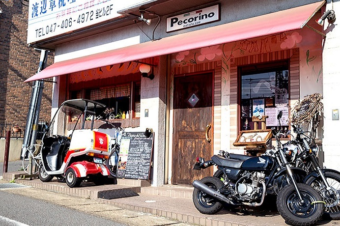
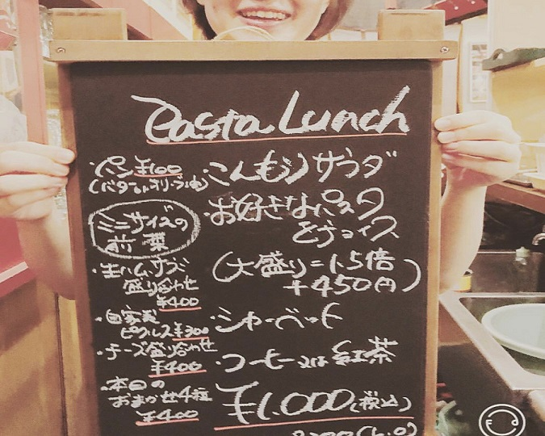

次は、オシャレな洋食店３選。
■ハンバーグが肉汁じゅわーで最高！『Mr.&フライパン』

1つ目に紹介するのが、人気洋食屋さん『Mr.＆FlyingPan（ミスターとフライパン）』。 店内は明るく清潔感があり、落ち着いた雰囲気のお店です。

こちらがランチメニュー人気No.１である、
・ハンバーグとナポリタン 1,250円(税込)。
特製デミグラスハンバーグにナポリタンとレタスを添えた逸品です。
ナイフを入れるとジュワッと肉汁が・・・
厚みがある肉々しいボリュームあるハンバーグです。
こちらも大人気の皆が大好きオムライスの、
・特製デミグラスソース添えオムライス 1000円(大盛＋200円)
ハム・ベーコン・オニオン入りのトマトライスに地鶏のふわとろ卵がのった絶品です。
他にも特製ハヤシライス、ハンバーグとエビフライセットや、
ミックスフライと、人気の特製メニューがあるので是非！
Mr.&フライパン（ミスターとフライパン）
- 【📒】千葉県習志野市津田沼7-2-21
- 【📞】047-451-4613
- 【🕒】11:30～15:00、17:00～21:00
- 【休】月曜日
- 【🚙】京成津田沼駅南口から徒歩10分
■ボリュームMAXかつ リーズナブル！『ステーキ テキサス』

２店目に紹介するのはJR津田沼駅千葉工業大学の近くにある、
『ステーキ テキサス』。ウエスタンな趣のあるたたずまい。
こちらが人気NO.1の『テキサスリブステーキ』！
１８０g（1480円）２４０g（1930円）・・・
このボリューム感に、このお値段！
音をジュウジュウと立てて運ばれてくるこのお肉。
チルドにこだわり冷凍せずに熟成させたというお肉の味は最高です。
もう一品人気なのが『ジャンボハンバーグ（300g)』。
たっぷりのデミグラスソースの下にはチーズがのっています。
普通サイズ（200g）は、なんと７８０円！！！
夜でもランチのような値段で食べれる魅力的な一品です！
ビーフ100%でお肉の間からしみ出る肉汁はこちらも箸が止まらない逸品。
ステーキ テキサス
- 【📒】千葉県習志野市津田沼2-6-34
- 【📞】047-477-9917
- 【🕒】[休日]12:00～15:00 17:00～翌1:00 [平日]夜のみ
- 【休】なし
- 【🚙】「JR津田沼駅」南口より徒歩9分
■ヨーロッパ風のかわいいお家！？イタリア料理『ペコリーノ』

次に紹介するのは、かわいい外観のお店『イタリア料理 ペコリーノ』。 手作り感あふれる小物が並び、ヨーロッパの田舎にある小さなお家のような外観からはお店のセンスの良さが伺えます。

ランチタイムのメニューは『本日のパスタランチ（1,000円）』
（お好きなパスタ＋こんもりサラダ＋シャーベット＋コーヒー又は紅茶）。
こんなに食べられてなんと1000円！超お得！！！
外観同様かわいらしい店内は、おしゃべりしながらのゆったりランチにも最適です。 ママ会やデートの利用にもぴったりです！
イタリア料理 ペコリーノ
- 【📒】千葉県船橋市前原西3-5-15
- 【📞】047-474-3319
- 【🕒】12:00～14:00、18:00～22:00
- 【休】月曜日、第3日曜日
- 【🚙】JR津田沼駅北口から徒歩8分